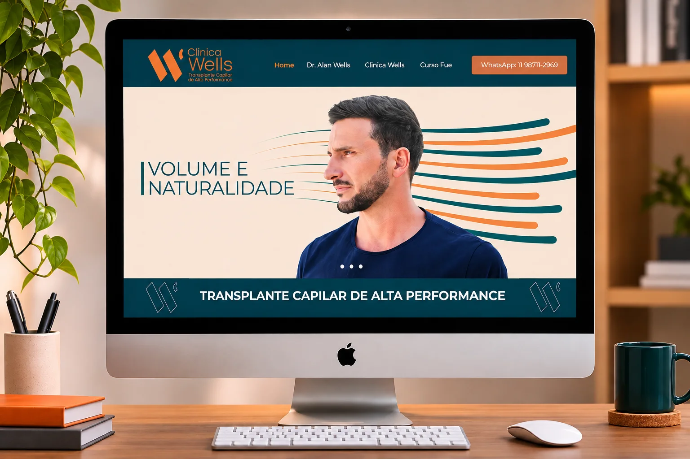

Clínica Wells
Uma clínica de transplante capilar que já tinha resultado de alta performance e precisava de uma marca à altura. Em seis meses, da estratégia à implantação, a Wells passou a falar com autoridade e a mostrar o que entrega.
Desafio
A Wells tinha impulsionadores claros: tecnologia pioneira, técnica sempre atualizada, a credibilidade do cirurgião e um atendimento pré e pós-operatório muito bem avaliado. Mas a marca não tinha posicionamento nem personalidade definidos, e a comunicação era tímida e desestruturada.
O cenário pedia urgência. O mercado crescia com a mudança de comportamento masculino, e novos concorrentes entravam sem qualidade, alguns com nomes parecidos e baixa reputação. O desafio era ser uma marca pioneira, que transmitisse autoridade e segurança por meio de resultados de alta performance e naturalidade.
Estratégia
Fizemos o diagnóstico interno e externo, mapeamos os concorrentes e traçamos o caminho: sair de uma marca sem propósito, com posicionamento de micro transplante e comunicação desestruturada, para uma marca que usa o propósito como ponto de partida, se posiciona em alta performance e é autoridade no segmento.
A Wells foi posicionada no arquétipo do Herói, cujo lema é “onde há vontade, há um caminho”: superação, protagonismo e fortalecimento diante do desafio.
Devolver ao homem a beleza, a autoestima e a naturalidade dos cabelos.
Mapa da marca
O DNA que orienta todas as decisões de marca e comunicação da Wells.
Propósito
- Devolver ao homem a beleza, a autoestima e a naturalidade dos cabelos, com técnicas de alta performance em transplante capilar
Posicionamento
- Ser autoridade em transplante capilar, maximizando resultados com tecnologia avançada e técnicas de alta performance
Arquétipo
- Herói
- Lema: onde há vontade, há um caminho
Personalidade
- Atualizada, acolhedora, inspiradora e transformadora
Experiência
- Humana, surpreendente e transformadora
Valores
- Confiança
- Inovação em técnicas e tecnologia
- Compromisso e superação
Criação
A nova identidade parte do W como símbolo: traços inclinados que sugerem movimento e crescimento. O logotipo vem acompanhado da tagline Transplante Capilar de Alta Performance. A paleta combina azul-petróleo e verde-água, que trazem confiança e saúde, com laranja e pêssego, que trazem calor e acolhimento. A tipografia une a Kurye, no logotipo, e a família Montserrat.
A personalidade visual se completa com formas derivadas do símbolo, fotografia de homens reais com resultado natural, ilustrações da evolução capilar e um território criativo que fala de naturalidade, beleza e de uma nova masculinidade.
Ilustrações dos destaques do Instagram
Comunicação
O tom de voz é verdadeiro, envolvente e esclarecedor, e o comportamento da marca é humano, transformador e encorajador. Com essa base, reestruturamos e ampliamos os canais: criamos o novo site, o enxoval gráfico e o conteúdo de valor para as redes sociais, como a série W Drops, em que o Dr. Alan Wells fala sobre alta performance em transplante capilar.
O novo site

O que entregamos
Seis meses de trabalho, da estratégia à implantação.
Estratégia
- Diagnóstico interno e externo
- Análise de concorrência
- Cenário e caminhos da marca
Plataforma de marca
- Propósito e posicionamento
- Arquétipo e valores
- Mapa da marca
Identidade visual
- Símbolo e logotipo
- Paleta e tipografia
- Guia de marca
Personalidade visual
- Formas derivadas do símbolo
- Fotografia e ilustrações
- Território criativo
Site
- Criação do novo site
- Textos e conteúdo
- Implantação
Comunicação
- Tom de voz e comportamento
- Enxoval gráfico
- Redes sociais